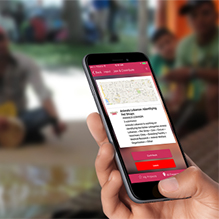
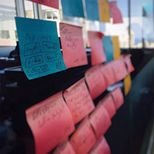
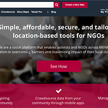
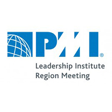
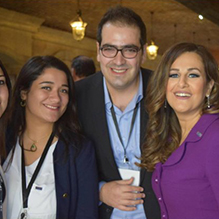

Non profit organizations are relying on ICT platforms to manage their operations, increase the visibility of their achievements and maximize the impact on their civic causes. Here comes the question do we develop those system or do we go cloud.
Read More
Hasan Jaffal | 15/12/2016 | tags: NGO - ICT4D

Civil Society Organizations that work on improving the welfare of animals started using the technology to improve the conditions of captive endangered wildlife by engaging the volunteers and activists.
Read More
Hasan Jaffal | 15/11/2016 | tags: NGO - ICT4D
Those of us invested in Apple’s ecosystem love our iPhones, iPads and MacBooks. We trust Apple. But when it comes to the software development world, Microsoft ‘s tools and operating systems tend to have the edge.
Read More
Hasan Jaffal | 12/9/2016 | tags: Apple - Software Development

ArabiaGIS has a professionally strong rooted background in traditional systems development. However, we then decided to give some passionate and highly professional active team members the opportunity.
Read More
Hasan Jaffal | 12/9/2016 | tags: ArabiaGIS - Agile - Scrum - Software Development

Civil Society Organization that needs to make social impact and raise money need to have tools to visualize its work making it more attractive, clean and interactive to communicate vision and messages.
Read More
Hasan Jaffal | 5/8/2016 | tags: Apple - Software Development

I had the opportunity to give a speech about Scrum at agile tour Beirut 2015. The conference focuses on agile project management, leadership, creativity, innovation, people-centric approaches, continuous improvement, and fun.
Read More
Hasan Jaffal | 8/4/2016 | tags: Agile - Scrum - Project Management

The Project Management Institute – Lebanon Chapter participated in the Middle East Region Leadership meeting that was organized by the PMI Region 12 in Dubai. All Region 12 Chapters attended the meeting.
Read More
Hasan Jaffal | 1/12/2015 | tags: PMI - PMI Lebanon Chapter - Project Management

Our knowledge became more up-to-date by attending a wide range of technical workshops in project management, we have been fed by positive energy and leadership motivation as we have listened to the inspired words and success stories.
Read More
Hasan Jaffal | 25/11/2015 | tags: PMI - PMI Lebanon Chapter - Project Management